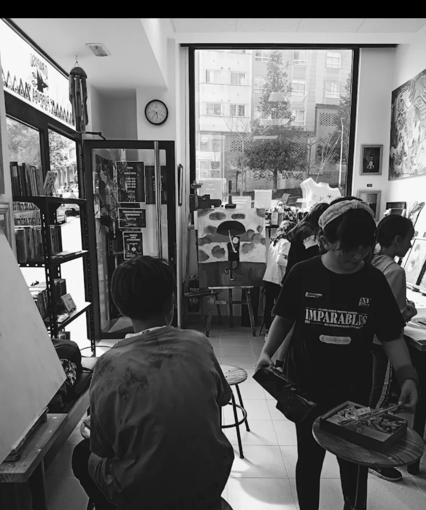
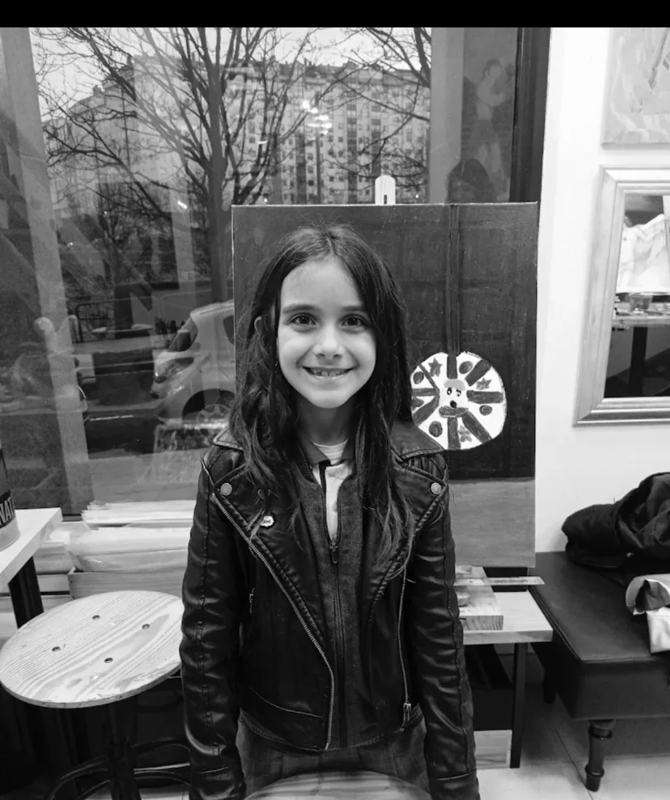
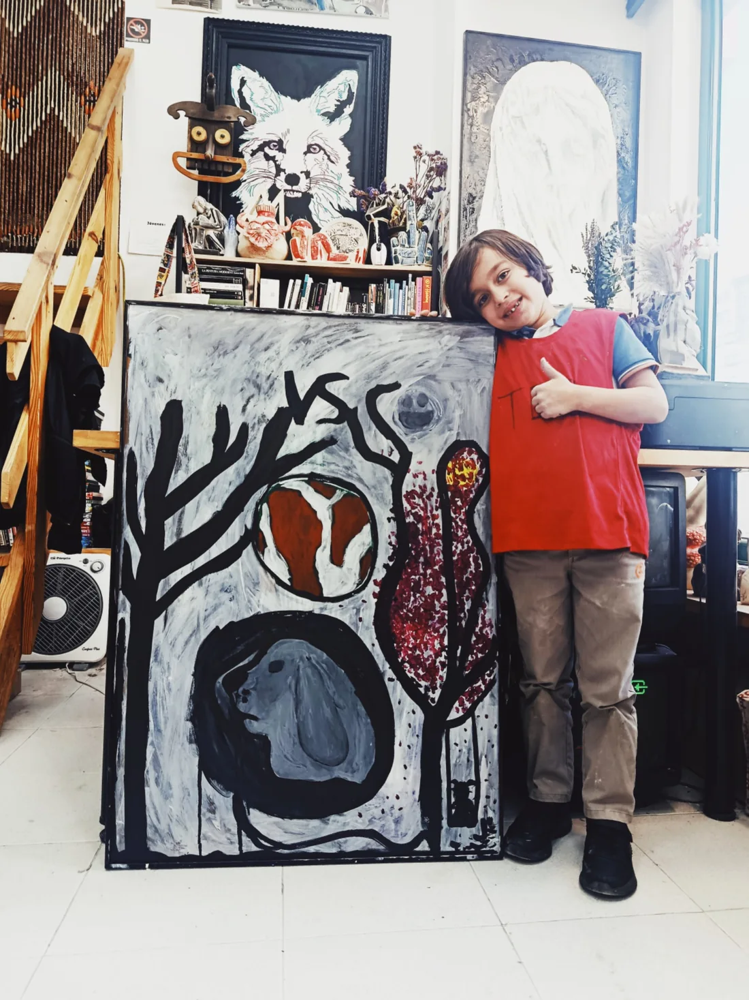
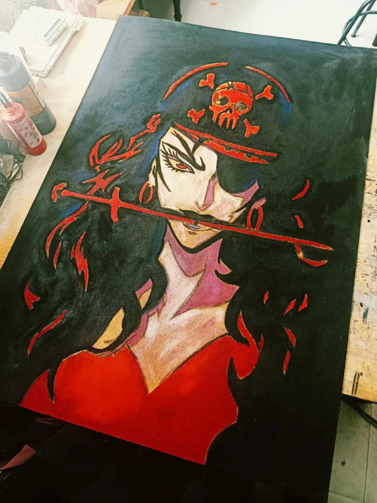
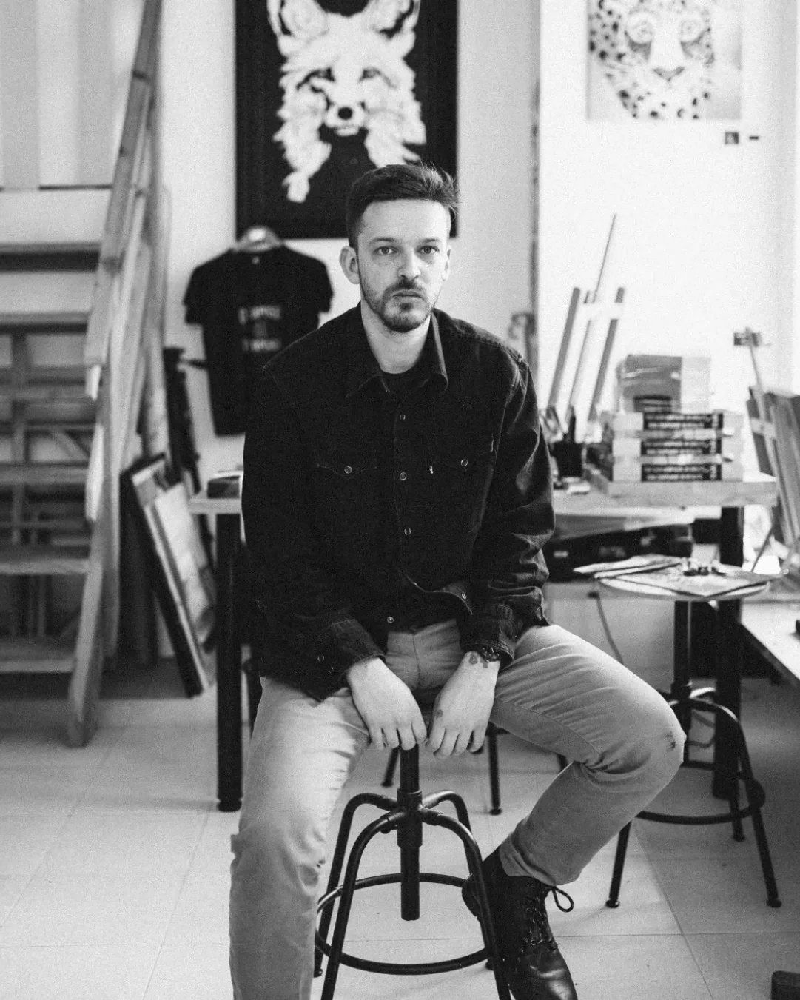

Adultos
Un día a la semana
60 €/mes
Dos días a la semana
100 €/mes

Taller artístico · A Coruña
O Raposo Púrpura es un taller de pintura y cerámica abierto al público. Un lugar para experimentar, charlar, aprender y disfrutar del proceso creativo, tengas o no experiencia previa.
Un taller para todas las edades
Un espacio abierto para crear, aprender y compartir un buen rato. Puedes elegir pintura o cerámica, aunque nunca hayas practicado antes.





Cómo son las clases
Eliges pintura o cerámica y desarrollas un proyecto propio, a tu ritmo. Nacho te acompaña paso a paso: te enseña técnicas, resuelve tus dudas y te ayuda a llevar tu idea a buen puerto. No necesitas experiencia previa.
También es un lugar para desconectar, conversar y compartir tiempo con otras personas.
Quién acompaña a los alumnos

@nachommmartinez · obra y trayectoria ↗
Artista visual · Cerámica e ilustración · Docencia artística. Autónomo y responsable de O Raposo Púrpura, en A Coruña.
Soy quien acompaña personalmente a los alumnos del taller. Cada persona puede elegir pintura o cerámica, desarrollar una idea propia y avanzar a su ritmo, con orientación técnica y ayuda durante todo el proceso. No es necesario tener experiencia previa.
Dirección y docencia artística · O Raposo Púrpura, A Coruña
Desde septiembre de 2022. Gestión autónoma del taller, actividades de pintura y cerámica, atención al público y acompañamiento individualizado de proyectos artísticos.
Exposición colectiva · Taller Justicia · Studio Follow
19–23 de enero de 2022. Con Antón L. Bazarra, Laura Pazos, Nacho Martínez y Richy Veiga.
Exposición colectiva · Mil pequenos peixes brancos, coma se fervera a cor da agua
11 de marzo–17 de mayo de 2021. Comisariada por Leticia Castromil.
Beca de creación artística audiovisual · Concello da Coruña
2020. Proyecto Zoótropo. Colaboradores: Hadrian Márquez, Carlos Alberto y Audra.
Exposición · Café Valentín
Mayo de 2019.
Seleccionado para el Festival de Mural · Concello da Coruña
Mayo de 2019.
Exposición colectiva · Taller Justicia, tras la puerta del garaje
Noviembre de 2018. Con Laura Pazos, Antón, Olalla Franco y Nacho Martínez. Organizada por Sen ánimo de nome.
Exposición · Loop · Bomoble
2–28 de febrero de 2018. Nacho Martínez.
Exposición · 3ES3 · Fórum Metropolitano
2017. Con Pedro Silva Opazo y Olalla Franco.
Restauración de arte · Santa Cristina, A Coruña
Marzo–septiembre de 2014.
Exposición · Circo de Artesanos
Octubre de 2010. Nacho Martínez.
Cabaret Místico y taller social con Alejandro Jodorowsky · Teatro Colón, A Coruña · 5 y 6 de febrero de 2016.
Cerámica, escultura, pintura e ilustración, diseño visual, docencia artística, gestión de proyectos creativos y comunicación digital.
Lunes a viernes
La elección de día y turno está sujeta a disponibilidad y debe confirmarse directamente con el taller.
Cuotas mensuales
Al apuntarte puedes elegir la actividad que prefieras: pintura o cerámica. Las tarifas mensuales indicadas se organizan según la edad y el número de días a la semana.
Un día a la semana
Dos días a la semana
Un día a la semana
Dos días a la semana
Para consultar plazas, materiales incluidos, edades o modalidades concretas, contacta con el taller. No se realizan reservas automáticas desde esta web.
Antes de escribir
No. Puedes empezar desde cero y avanzar a tu ritmo, con acompañamiento durante todo el proceso.
Sí. Puedes elegir pintura o cerámica y desarrollar un proyecto propio.
Las clases son de lunes a viernes, de 11:00 a 14:00 por la mañana y de 17:00 a 20:00 por la tarde. El día y turno concretos dependen de la disponibilidad.
Esos detalles se confirman directamente con Nacho por WhatsApp para darte información actualizada.
Ayuda rápida
Este asistente da respuestas automáticas sobre precios, horarios y clases. ¿Prefieres hablar con Nacho? Escríbele por WhatsApp cuando quieras.
¿Prefieres hablar con una persona o tienes alguna duda? Nacho te responde personalmente por WhatsApp:
Hablar directamente con Nacho ↗Respuestas automáticas, sin reservas ni matrículas. Tus preguntas no se envían a un servicio externo. WhatsApp solo se abre si tú pulsas el enlace.
Los Rosales · A Coruña
O Raposo Púrpura
Rúa Alcalde Suárez Ferrín, 3A, bajo
15011 A Coruña
📍 Cómo llegar con Google Maps ↗
Para utilizar el mapa se necesita conexión a internet.
Para preguntar por plazas, materiales, edades u otra información sobre pintura y cerámica, puedes escribirnos por WhatsApp al +34 666 550 380.
Localización basada en la dirección publicada del taller. Para consultas personales, escribe directamente a Nacho por WhatsApp.